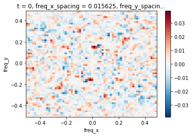

In [1]:
import numpy as np
import xarray as xr
import xrft
import matplotlib.pyplot as plt
%matplotlib inline
Prepare data¶
Input data¶
We generate a synthetic xarray dataarray.
In [2]:
N = 64
da = xr.DataArray(np.random.rand(N,N,N),
dims=['t','y','x'],
coords={'t':range(N),'y':range(N),'x':range(N)}
)
da
Out[2]:
<xarray.DataArray (t: 64, y: 64, x: 64)>
array([[[ 0.838538, 0.146604, ..., 0.875933, 0.789385],
[ 0.349622, 0.545056, ..., 0.105519, 0.217185],
...,
[ 0.908291, 0.844869, ..., 0.996567, 0.695744],
[ 0.692447, 0.697206, ..., 0.728242, 0.179596]],
[[ 0.778495, 0.064382, ..., 0.392156, 0.037733],
[ 0.512825, 0.798801, ..., 0.898834, 0.584414],
...,
[ 0.899494, 0.211977, ..., 0.476848, 0.328774],
[ 0.731649, 0.931243, ..., 0.335878, 0.548401]],
...,
[[ 0.356647, 0.904027, ..., 0.078317, 0.562104],
[ 0.590365, 0.717225, ..., 0.242174, 0.623704],
...,
[ 0.46673 , 0.123202, ..., 0.861932, 0.953624],
[ 0.784119, 0.492125, ..., 0.237214, 0.98343 ]],
[[ 0.945108, 0.254692, ..., 0.514705, 0.00387 ],
[ 0.391316, 0.047272, ..., 0.397938, 0.800711],
...,
[ 0.309341, 0.722667, ..., 0.741467, 0.473017],
[ 0.29156 , 0.408512, ..., 0.312531, 0.989734]]])
Coordinates:
* t (t) int64 0 1 2 3 4 5 6 7 8 9 10 11 12 13 14 15 16 17 18 19 20 ...
* y (y) int64 0 1 2 3 4 5 6 7 8 9 10 11 12 13 14 15 16 17 18 19 20 ...
* x (x) int64 0 1 2 3 4 5 6 7 8 9 10 11 12 13 14 15 16 17 18 19 20 ...
Perform the power spectrum¶
We remove the x-y mean before calculating the power spectrum over
the x-y axes.
In [3]:
ps = xrft.power_spectrum(da.chunk({'t':1}), dim=['x','y'], detrend='constant', window=True)
ps
/Users/uchidatakaya/Documents/Python/xrft/xrft/xrft.py:272: FutureWarning: xarray.DataArray.__contains__ currently checks membership in DataArray.coords, but in xarray v0.11 will change to check membership in array values.
elif d in da:
Out[3]:
<xarray.DataArray 'rechunk-merge-69d35b1a7ac53e39ec78d56a11758d16' (t: 64, freq_y: 64, freq_x: 64)>
dask.array<shape=(64, 64, 64), dtype=float64, chunksize=(1, 64, 64)>
Coordinates:
* t (t) int64 0 1 2 3 4 5 6 7 8 9 10 11 12 13 14 15 16 17 18 ...
* freq_y (freq_y) float64 -0.5 -0.4844 -0.4688 -0.4531 -0.4375 ...
* freq_x (freq_x) float64 -0.5 -0.4844 -0.4688 -0.4531 -0.4375 ...
freq_x_spacing float64 0.01562
freq_y_spacing float64 0.01562
In [4]:
ps[0].plot()
Out[4]:
<matplotlib.collections.QuadMesh at 0x11f54aac8>

Perform the cross spectrum¶
We generate the second data array and take the cross spectrum between the two.
In [5]:
da2 = xr.DataArray(np.random.rand(N,N,N),
dims=['t','y','x'],
coords={'t':range(N),'y':range(N),'x':range(N)}
)
cs = xrft.cross_spectrum(da, da2, dim=['x','y'], detrend='constant', window=True)
cs[0].plot()
/Users/uchidatakaya/Documents/Python/xrft/xrft/xrft.py:272: FutureWarning: xarray.DataArray.__contains__ currently checks membership in DataArray.coords, but in xarray v0.11 will change to check membership in array values.
elif d in da:
/Users/uchidatakaya/Documents/Python/xrft/xrft/xrft.py:272: FutureWarning: xarray.DataArray.__contains__ currently checks membership in DataArray.coords, but in xarray v0.11 will change to check membership in array values.
elif d in da:
Out[5]:
<matplotlib.collections.QuadMesh at 0x11f6377f0>

Perform the isotropic power spectrum¶
We take the isotropic power spectrum assuming isotropy in x and
y.
In [6]:
ips = xrft.isotropic_powerspectrum(da[0], dim=['x','y'], detrend='constant', window=True)
ips
/Users/uchidatakaya/Documents/Python/xrft/xrft/xrft.py:428: RuntimeWarning: invalid value encountered in true_divide
kr = np.bincount(kidx, weights=K.ravel()) / area
/Users/uchidatakaya/Documents/Python/xrft/xrft/xrft.py:433: RuntimeWarning: invalid value encountered in true_divide
/ area) * kr
Out[6]:
<xarray.DataArray (freq_r: 17)>
array([ nan, 4.982430e-05, 3.631201e-04, 9.183018e-04,
1.469548e-03, 2.353589e-03, 2.076394e-03, 2.682034e-03,
2.261907e-03, 2.307571e-03, 3.201631e-03, 4.263616e-03,
4.922695e-03, 4.955641e-03, 5.336266e-03, 3.927165e-03,
6.219528e-03])
Coordinates:
* freq_r (freq_r) float64 nan 0.02122 0.05125 0.08266 0.1148 0.1475 ...
In [7]:
fig, ax = plt.subplots()
ax.plot(ips.freq_r, ips)
ax.set_xscale('log')

In [ ]: